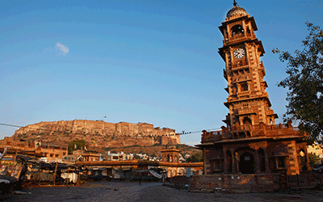

Giza, Egypt


Geographical Location: Africa
Giza is located on the western bank of the Nile River, and it is a historically and culturally significant city in Egypt. It is home to the Great Pyramids and the Sphinx, which are ancient wonders of the world. These monuments also raise many questions about how advanced the ancient Egyptians truly were. Giza has recently become a bustling city full of tourists and adventurers seeking to see the ancient lure of Egypt.
Giza is a city that is very unique for a lot of reasons. One reason why is the ability to be a vibrant city that also is able to blend in its vast historical heritage within its city life . One one side you can see the pyramids , and on the other you can see the bustling night life of Egypt. This city is also very close by to the capital of Egypt , which allows tourists to not only visit Giza , but they also gain the opportunity of going to the nearby capital and getting any work needed done.
Photo Gallery


San Francisco, California


Geographical Location: North America
San Francisco is a great location to visit with many landmarks, including the Golden Gate Bridge and Alcatraz. Located in Northern California, San Francisco is one of the most populated cities in California with a population of 815,000. The city is also a center of culture and industry. San Francisco is home to a thriving tech industry.
San Francisco has many trails and parks where you can hike or enjoy a walk. The Presidio is a large park with hiking trails and paths surrounding the Golden Gate Bridge area. One can see picturesque views of the bay and its wildlife.
Photo Gallery


Grand Canyon, Arizona


Geographical Location: North America
The Grand Canyon is a natural geological formation located in the state of Arizona. It is a steep-sided canyon carved by the Colorado River over millions of years. The canyon is known for its size, vibrant and varied colors, and intricate rock formations. It is one of the most famous and visited natural landmarks in the United States and around the world.
Though the Grand Canyon is one of the most iconic places to travel, there are many dangers that come from such a terrain. Between 2010 and 2020, 134 have died, mainly due to extreme heat. You can see below, examples of people getting hurt due to the heat and carelessness.
Photo Gallery


Machu Picchu, Peru


Geographical Location: South America
Machu Picchu is an ancient Incan citadel located in the Andes Mountains of Peru, South America. It is renowned for its breathtaking beauty, architectural ingenuity, and historical significance. Believed to have been built in the 15th century during the height of the Inca Empire, Machu Picchu served as a royal estate or religious retreat for the Incan ruler Pachacuti.
Machu Picchu is an ancient Incan citadel located in the Andes Mountains of Peru, South America. It is renowned for its breathtaking beauty, architectural ingenuity, and historical significance. Believed to have been built in the 15th century during the height of the Inca Empire, Machu Picchu served as a royal estate or religious retreat for the Incan ruler Pachacuti.
Photo Gallery


Rajasthan, India

Geographical Location: Asia
Rajasthan, located in northwestern India, is a captivating state renowned for its opulent palaces, ancient forts, and vibrant culture. The "Land of Kings" boasts cities like Jaipur with its bustling markets, Udaipur with its serene lakes, and Jaisalmer with its golden desert dunes. This region's warm hospitality and desert charm make it a cultural treasure.
Beyond its architectural marvels, Rajasthan's natural beauty shines through its national parks and wildlife sanctuaries, offering glimpses of majestic tigers and diverse bird species. The state's cuisine, known for its aromatic spices, presents dishes like Dal Baati Churma that showcase its rich flavors. From historical heritage to natural wonders, Rajasthan presents a kaleidoscope of India's vibrant identity.
Photo Gallery


Ari Atoll, Maldives


Geographical Location: Asia
Maldives is an archipelagic state and country in South Asia, situated in the Indian Ocean. It lies southwest of Sri Lanka and India, about 750 kilometres (470 miles; 400 nautical miles) from the Asian continent's mainland. The Maldives' chain of 26 atolls stretches across the equator from Ihavandhippolhu Atoll in the north to Addu Atoll in the south.
Maldives offers such an incredible combination of dazzling beaches, cerulean waters and fantastic diving that its opening up to travelers without limitless financial resources is definitely a cause for celebration.
Photo Gallery